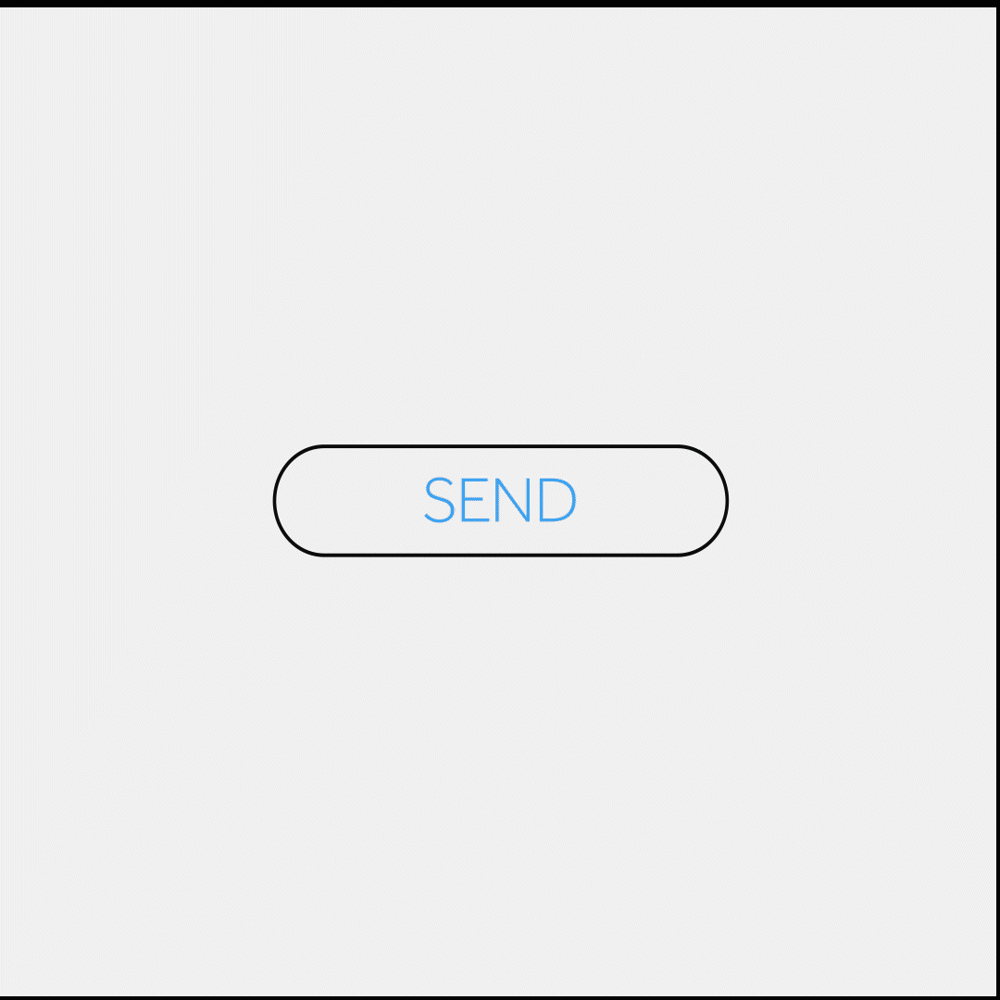
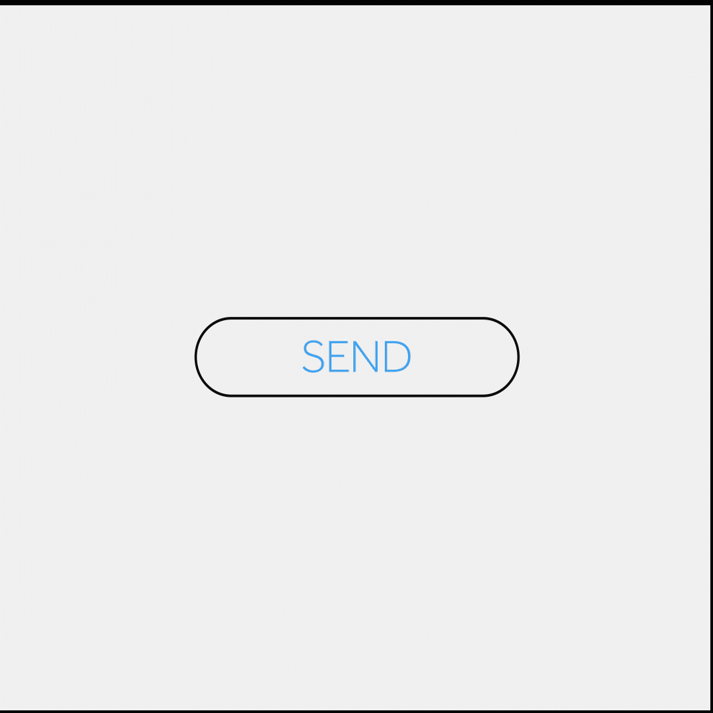
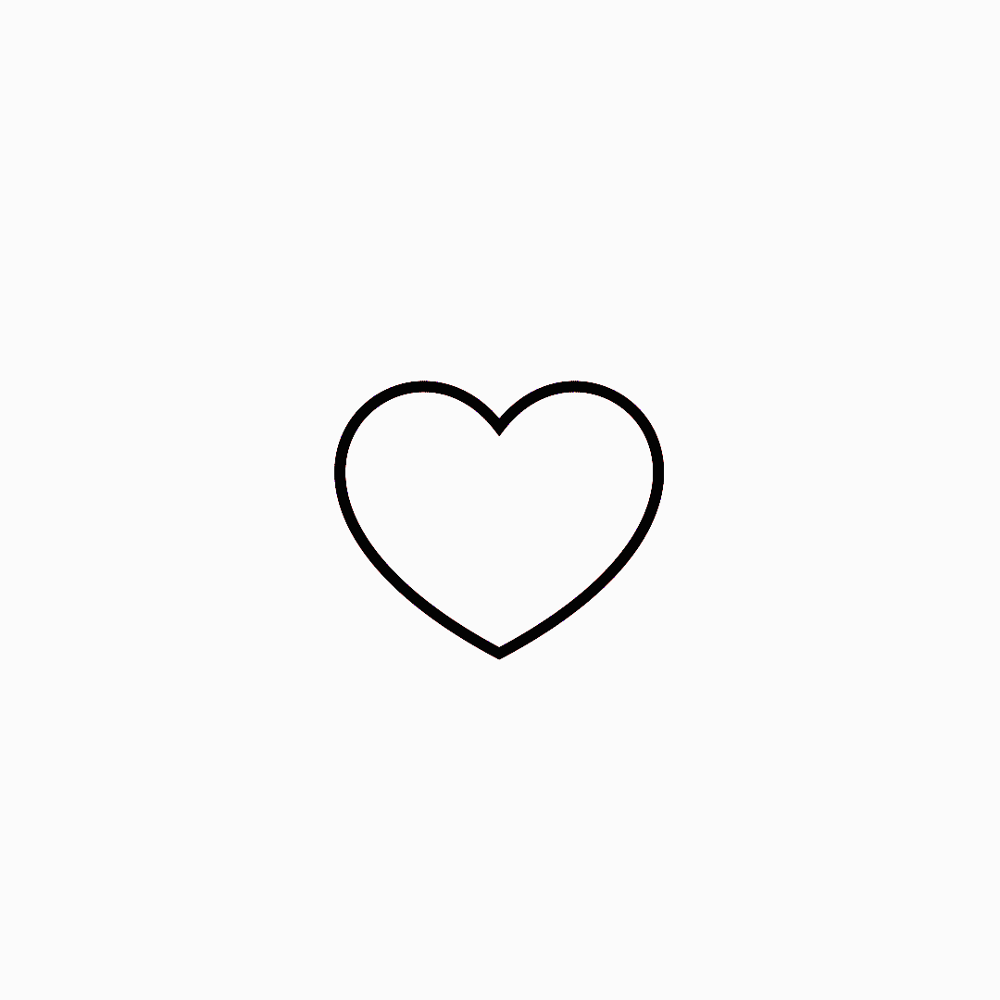
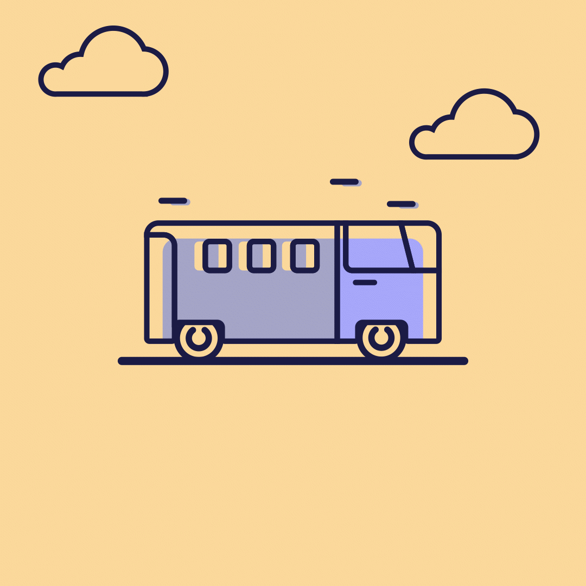
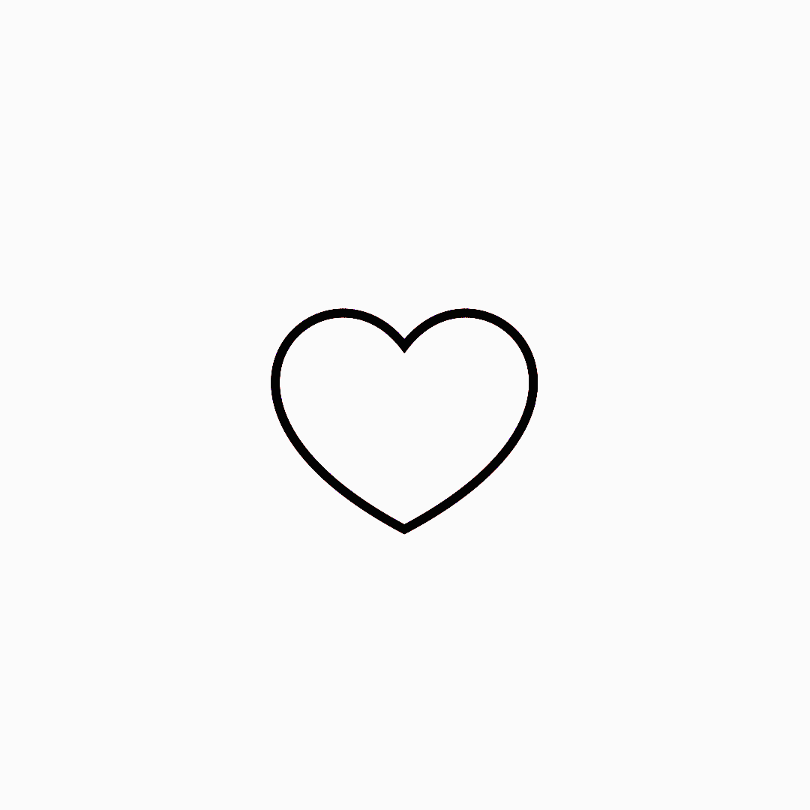
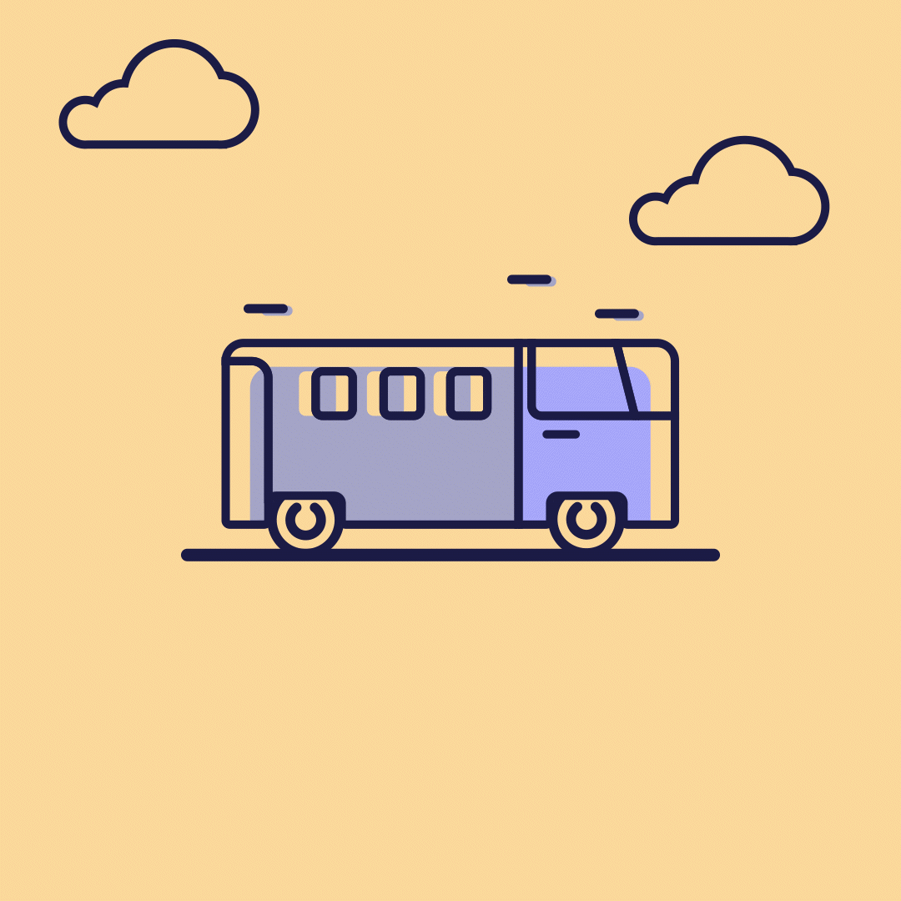
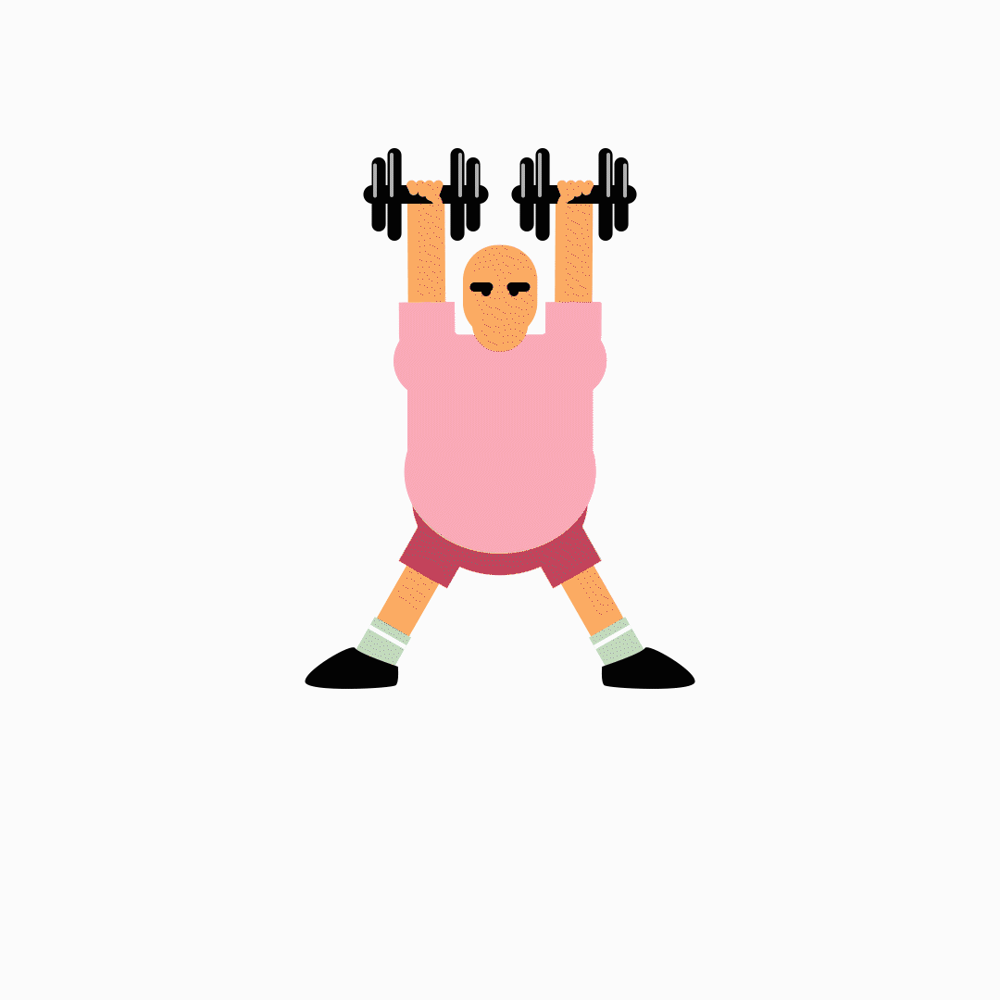
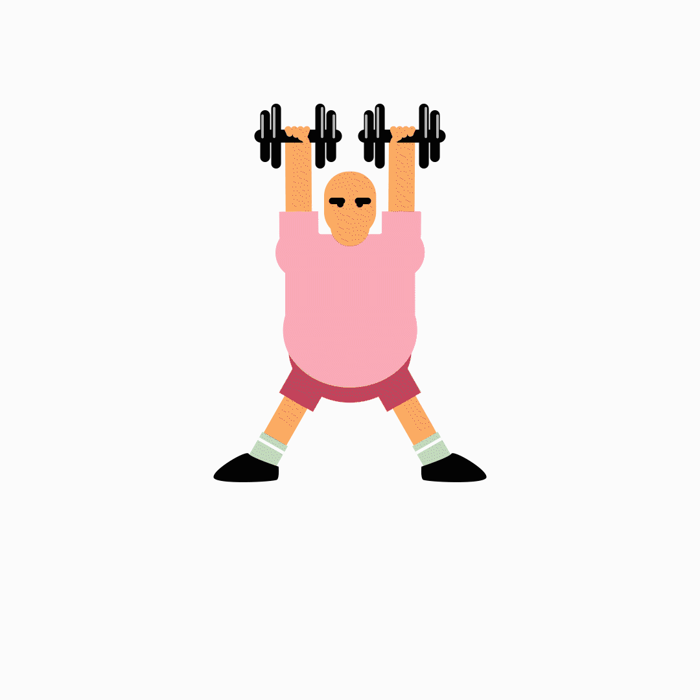

Context
I realized not far into my second year of the Global Business and Digital Arts program at the University of Waterloo, that my graphic design skills were subpar to most of my peers. I decided that I didn’t want that to be the case anymore. So, I committed myself to practice and after discovering other similar timeline challenges, I set my own goal of creating one design a day for a whole year. It originally began as a graphic design challenge but the more I learned about myself the more it evolved into a well-rounded design challenge; including logo design, UI design, UX design, motion graphic, motion UI, etc.
But Why?
I always knew that graphic design and illustration wasn't my specialty. All through my life I always struggled with it. I have always had a passion for the arts but never pushed myself to pursue them. I realized in late 2019 that I wanted to change this, I wanted to become good at design. I committed myself to improving and figured the best way to accomplish that goal was to practice every day. I started with the biggest feasible goal I could think of, and committed to creating a digital design every day for 365 days.
Vision Statement
My goal was to spend at least an hour every single day for a year to create some kind of a design. I wanted to have a minimum allotted time so that even on my ‘lazy days’ I still had to put in some effort. My second rule I set for myself was that I had to do it every day. No days off, no excuses. My last and final rule of the challenge was that I had to learn something. Even if it was something small like a keyboard shortcut, I felt if I wasn’t learning something new each day, there was no point. So, with my goal and my rules set in place I set out on my journey with a laptop, a mouse, and a subscription to Illustrator.
Starting Off
When I first started I had absolutely no idea where to begin. At this point I knew that
Adobe existed and had used Photoshop once or twice but had little knowledge or practice in any kind of graphic design.
The only two programs
I had any sort of knowledge in were Adobe Photoshop and Illustrator, so I decided
Illustrator was the best for creating the content I wanted to make.
Looking back at my first design, I really think it is lacking but, at the time I made it I know I was really proud!
It was the first step in a long journey.
All my early designs were
fairly basic and most of my ideas came from other designs I saw; trying to recreate them in my own way.
In this initial period, Adobe Illustrator was my tool of choice, and I began to get quite comfortable using the software.
Learning New Concepts
After about a month or so of this project I started feeling confident with the tools I was using and felt like I should try and step outside of that comfort zone. I started trying different tools and styles. I worked with a drawing tablet for a while, played around with negative space, and just tried my best to do something different from the day before. A few months in I came across something called ‘the daily logo challenge’ and I incorporated that 50-day challenge into my larger 365 day challenge; learning best practices for logo design along the way. These weren't the only logos I created but, it was nice to have a prompt for my designs.
Motion Design
During my daily logo challenge, I started experimenting with Adobe After Effects and creating motion graphics. Although animation is very tedious and time consuming, the ever-powerful Google gave me the tutorials I needed to get me started and helped me discover just how much I love making things move.
 

 



 

Learning UI
UI design was a very foreign concept to me before this challenge. Until shortly before this challenge began, UI design was something I took for granted. I never made the connection that the applications and devices we use are all carefully thought about and created, and this realization is what pushed me in the direction of product design. Having the ability to create something that people can enjoy so thoroughly without realizing just how complex it is, is a fascinating idea to me. So, I began practicing my UI design. In fact, I ended up enjoying UI design more than typical graphic design. I found that I could incorporate and experiment with UI very easily, and incorporating animation is really fun. I found that when I didn’t know what to make in this project, I made a UI design.

The Bad Times
Not every day was the same. There were occasionally times when I just had too much going on, or truly just wasn't in the mood. This is reflected in a number of my designs, and in the early days my confidence took a blow because of it. What I reflected on to continue this challenge through the lows was the original purpose; to learn. Not every day will be perfect or even good but everyday can be a learning experience.
The Good Times
On the other hand. There's always good days to complement the bad! There are designs from this challenge that I am very proud of, and some that just have good memories behind them. The farther I progressed in the challenge, I found myself having more 'good' days than 'bad' ones. Now being finished and looking back, it isn't a perfect journey, but you can see how much I improved.
The last 100
After being about two thirds of the way through this project I started to run out of ideas. So, I created my own prompts for the final 100 days. I decided to do weeklong themes and have each design for a week be a part of that theme. Some weeks it was creating the basis for a UI concept, and others were graphics based on a theme like 'Winter Week'. This was really fun because it allowed me to create some ideas that were bigger than one day designs.
Takeaways
Everything comes at a cost. If you set out to accomplish something, some sacrifices must be made, whether it was sleep, hanging out with friends, or other hobbies. Initially, this frustrated me. By committing to this goal, I was missing out on something that I wanted to do, and sometimes needed to do. However, my mindset changed when I realized that by spending time on hobbies, I was working to better myself and accomplish my goals. This leads to one of the biggest lessons I learned, no matter what you are doing, you are sacrificing something else. This realization was huge for me. It has allowed to improve not only the things that I work on, but also all those other things that we can take for granted like hanging out with friends, hobbies, and even sleep! I learned to manage my time appropriately so I have time to work while still being able to have time for friends and hobbies. I've also learned that effort in and of itself is an important quality. It’s not easy to put in consistent effort. Being able to sit down each day, regardless of if I wanted to that day or not, taught me how to ‘force creativity’. It doesn’t just apply to design either. Having the experience and confidence that I can learn something by working hard has allowed me to excel in any endeavor I pursue. Ultimately, I would say this project was a success, even if there were some road bumps along the way. I proved to myself that I could accomplish the goals I set for myself, I learned that I could excel at design, and I will only continue to improve as I pursue the craft of design.